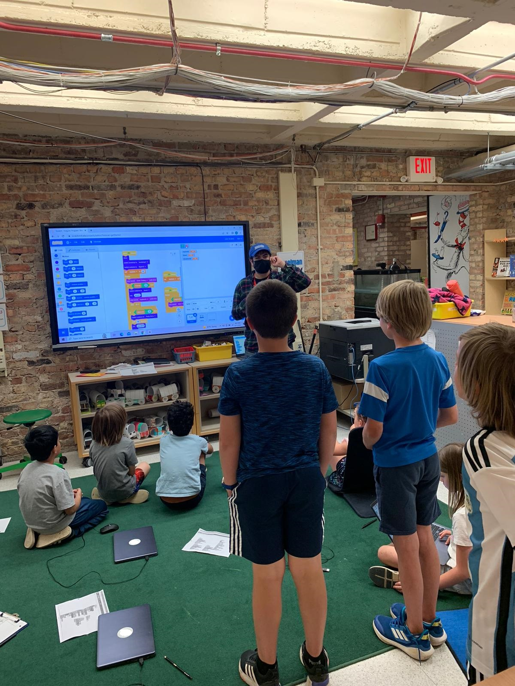

Ages: 6-12
Duration: 10 weeks
Instructor/Student:1 to 6
Details:
Our after school programs have no need for software installs or bringing your personal computer, we bring our instructors to your child's school and instruct in the class in a small group with experienced Instructors with stem backgrounds. We simply just use the computers that are provided by the school and teach from there. We teach the concepts of game design in scratch that involve the basic computer science fundamentals such as
- loops
- conditionals
- variables
- Debugging
- sequencing
for more details please contact us
learn more